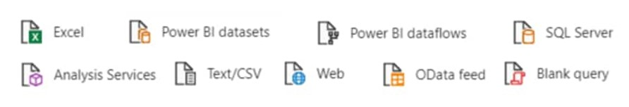

Vamos allá!
Hola que tal en esta sección aprenderemos a ocupar la herramienta de PowerBi la cual es muy útil a la hora de querer presentar datos de una forma más visual como gráficas y mapas.

Power BI es un servicio gratuito de análisis de negocio basado en la nube y visualización de datos,de negocio. Esta herramienta de Business Inteligence (BI), incorporada en la suite de productividad Microsoft Office 365, permite controlar la salud de un negocio mediante un dashboard en vivo, crear informes interactivos con Power BI Desktop y acceder a los datos en cualquier lugar con las aplicaciones nativas de móvil.
Power BI permite conectar a cientos de orígenes de datos en la nube o entorno local, creando informes con objetos integrados o creando objetos personalizados.
El acceso a los datos puede ser desde una tabla Excel, Salesforce, Dynamic CRM, Google Analytics, hasta complejas bases de datos (on-premise o en la nube), información de servicios de Azure, etc., lo cual facilita tener toda la información en una única visualización.
Con el análisis de los datos, se pueden evaluar los crecimientos, debilidades, fortalezas de una organización, y permitir la toma de acertadas decisiones a corto, mediano y largo plazo, a través de los paneles, informes y gráficos interactivos.
Power BI, nos permite analizar los datos y obtener patrones “poco visibles” y que ayuden a llegar a conclusiones y toma de decisiones en favor de nuestra organización. Para ello se puede usar la previsión, la agrupación, las medidas rápidas; y para usuarios más avanzados esta herramienta brinda un potente lenguaje de fórmulas de DAX, que nos proporciona un control total sobre el modelo. Cuenta, además, con una funcionalidad de inteligencia artificial, que no requiere código, con la que los usuarios pueden descubrir “información oculta” que permite pronósticos a futuro y resultados estratégicos a nivel empresarial.